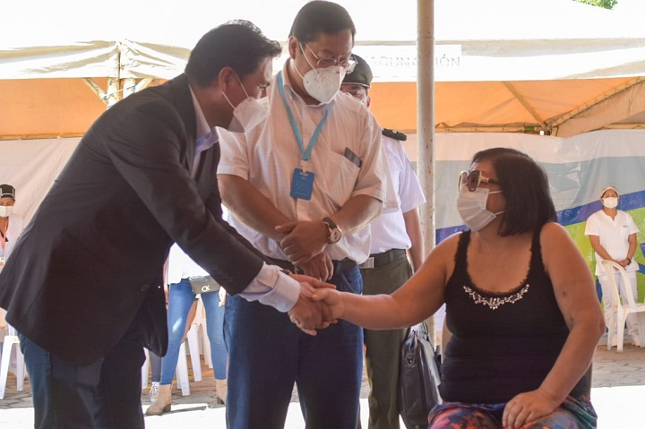

Estadisticas en "Santa Cruz"
110.521(+ 661)
CONFIRMADOS
98.081(+ 513)
RECUPERADOS
5.649(+ 12)
MUERTES
128.491
VACUNADOS
Tasas en función a la enfermedad
6.791
ACTIVOS
5.11%
TASA DE LETALIDAD
88.74%
TASA DE RECUPERACIÓN
Vacunacion en el departamento
GOBIERNO INICIA PROCESO DE VACUNACIÓN MASIVA CONTRA LA COVID-19 INMUNIZANDO A PERSONAS CON
ENFERMEDADES DE BASE
El Gobierno a través del Ministerio de Salud y Deportes inició hoy en el departamento de Santa
Cruz la campaña de vacunación masiva contra la COVID-19, tras la llegada de las 500.000 dosis de
inmunizadores que arribaron de China.
El Presidente del Estado Plurinacional, Luis Arce Catacora y el ministro de Salud y Deportes,
Jeyson Auza Pinto, la ministra de la Presidencia, Marianela Prada, entre otros, acompañaron la
inmunización de personas con enfermedades de base que recibieron la primera dosis de la vacuna
Sinopharm contra la COVID-19.
El encuentro entre los pacientes y el Primer Mandatario se dio en el Centro Nacional de
Enfermedades Tropicales (CENETROP) en la ciudad de Santa Cruz de la Sierra.
“Nos hemos empeñado en resolver el problema de manera estructural, la compra de vacunas fue un
primer paso, pero éste es el más importante al proceder a la vacunación masiva, hay un rol y
cronograma que estamos respetando en función al plan Estratégico presentado por el Ministerio de
Salud, de acuerdo a las normativas internacionales”, resaltó el Presidente Arce.
Por su parte, el ministro de Salud y Deportes explicó el procedimiento que consta de tres pasos:
Registro, Vacunación y Monitoreo, la autoridad presentó el Plan Nacional de Inmunización y
destacó el proceso informativo que debe recibir el paciente.
“La vacunación incluye un proceso informativo sobre la vacuna para que los pacientes que van a
recibir la misma sepan cuáles son los aspectos positivos, los riesgos y cualquier duda que
tengan sea resuelta. Una vez que se brinda la información a la persona se procede a la firma de
un consentimiento informado que respalda su aceptación y se realiza la aplicación del
inmunizador”, puntualizó en Ministro.

centros de Atención en la ciudad de Santa cruz de la sierra
Centros de Salud
1.
Centro de Salud 12 de Diciembre
2.
Centro de Salud 18 de Marzo
3.
Centro de Salud 25 de Diciembre
4.
Centro de Salud 26 de Septiembre
5.
Centro de Salud Anita Suárez De Leigue
6.
Centro de Salud Antofagasta
7.
Centro de Salud Barrio Nuevo Los Pinos
8.
Centro de Salud Bermudez
9.
Centro de Salud Buen Samaritano
10.
Centro de Salud Cañada El Carmen
11.
Centro de Salud Cortez
12.
Centro de Salud El Dorado Norte
13.
Centro de Salud El Pajonal
14.
Centro de Salud El Porvenir
15.
Centro de Salud El Quior
16.
Centro de Salud El Recreo
17.
Centro de Salud El Tajibo
18.
Centro de Salud Hamacas
19.
Centro de Salud La Colorada
20.
Centro de Salud Las Américas
21.
Centro de Salud Lazareto
22.
Centro de Salud Los Bosques
23.
Centro de Salud Los Cusis
24.
Centro de Salud Los Olivos
25.
Centro de Salud Magisterio
26.
Centro de Salud María Cecilia
27.
Centro de Salud Mi Salud
28.
Centro de Salud Montero Hoyos
29.
Centro de Salud Noel Kempff
30.
Centro de Salud Nutricional
31.
Centro de Salud Onduline Guapurú
32.
Centro de Salud Palmar del Oratorio
33.
Centro de Salud Palmasola
34.
Centro de Salud Paurito - Hospital San Pantaleon
35.
Centro de Salud Pedro Diez
36.
Centro de Salud Perpetuo Socorro
37.
Centro de Salud Plan 4.000
38.
Centro de Salud Pochola Trapero
39.
Centro de Salud Pueblo Nuevo
40.
Centro de Salud Roca y Coronado
41.
Centro de Salud Roque Aguilera
42.
Centro de Salud Sagrada Familia
43.
Centro de Salud San Agustín
44.
Centro de Salud San Antonio
45.
Centro de Salud San Luis
46.
Centro de Salud San Luisito
47.
Centro de Salud Santa Isabel
48.
Centro de Salud Sante Sud
49.
Centro de Salud Santiago Parada
50.
Centro de Salud Tierras Nuevas
51.
Centro de Salud Vida y Esperanza
52.
Centro de Salud Virgen de Cotoca
53.
Centro de Salud Wille Lemaitre
54.
Centro de Salud Zafranilla
Centros de Salud Integral:
55.
Centro de Salud 10 de Octubre (Centro Integral)
56.
Centro de Salud Bolinter (Centro Integral)
57.
Centro de Salud Brígida (Centro Integral)
58.
Centro de Salud El Remanzo (Centro Integral)
59.
Centro de Salud El Trapiche (Centro Integral)
60.
Centro de Salud Elvira Wunderlich (Centro Integral)
61.
Centro de Salud Los Tusequis (Centro Integral)
62.
Centro de Salud Municipal Distrito 12 UV 169 (Centro Integral)
63.
Centro de Salud Palos Verdes (Centro Integral)
64.
Centro de Salud Preventiva Sud (Centro Integral)
65.
Centro de Salud San Carlos (Centro Integral)
66.
Centro de Salud San Miguel de los Junos (Centro Integral)
67.
Centro de Salud Santa Rosita (Centro Integral)
68.
Centro de Salud Virgen de Fátima (Centro Integral)
Hospitales Municipales:
69.
Hospital Municipal Bajío del Oriente
70.
Hospital Municipal Francés
71.
Hospital Municipal Pampa de la Isla
72.
Hospital Municipal Plan 3000
73.
Hospital Municipal Villa 1ro de Mayo
Redes de Salud:
74.
Red de Salud Centro (Sede de Gerencia Administrativa)
75.
Red de Salud Este (Sede de Gerencia Administrativa)
76.
Red de Salud Norte (Sede de Gerencia Administrativa)
77.
Red de Salud Sur (Sede de Gerencia Administrativa)
Casas de Acogida:
78.
Casa de Acogida Ana Medina
Albergue de Animales:
79.
Centro de Albergue Temporal para Canes y Felinos (CEMZOOCRUZ)
IME y SISME:
80.
IME (Instituto de Equipos Médicos) y SISME (Sistema Integrado de Servicios Médicos)
Caso de Contagio
Información sobre el Covid-19
Números de Emergencia
Ante cualquier sospecha de los síntomas de coronavirus, #QuedateEnCasa y llama a
cualquiera de los siguientes números:
Gobierno Autónomo Municipal de Santa Cruz de la Sierra:
DEM (Departamento de Emergencia Municipal): 800 12 5050
SISME (Sistema Integrado de Servicios Médicos): 160
Línea abierta vecinal: 800 12 5700
Gobierno Nacional: 800 10 1104
Gobierno Autónomo Departamental de Santa Cruz: 800 14 8139 o al 168